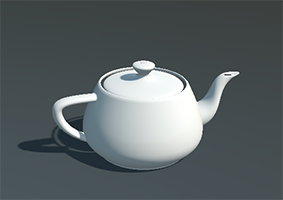

Drawables
A drawable is a component that takes part in rendering. Drawable derives from Component and adds an abstract Draw(DrawContext drawContext) method that the render pipeline calls while it renders the scene. Drawables register with the scene's render manager when they are attached; see the Render Overview for how that manager works.
Drawable3D

Drawable3D is the base class for drawables that produce 3D content, and the one you derive from in almost every case. MeshRenderer, SkinnedMeshRenderer, ParticlesRenderer, BillboardRenderer and Text3DRenderer are all drawables of this kind. Its Draw() method runs once for each camera that renders the scene, which is where it creates or updates the objects that camera will draw.
Drawable3D adds this property:
| Property | Default | Description |
|---|---|---|
| RenderFlags | RenderFlags.CastShadows |
Flags that describe how the drawable is rendered. With CastShadows set, the objects of this drawable cast shadows; set it to RenderFlags.None to disable them. |
Every drawable also inherits these properties from Drawable:
| Property | Default | Description |
|---|---|---|
| IsCullingEnabled | true |
Lets the renderer skip the drawable when it is outside the view of the camera. |
| OrderBias | 0 |
Shifts the drawable in the render order, from -512 to 511. Useful to force the order of transparent objects. |
| Transform | The Transform3D of the entity |
Bound automatically when the entity has one; null otherwise. |
Create a Drawable3D
This drawable outlines an oriented box around its entity, which is handy to visualize a volume while you debug. It draws with the LineBatch3D of the scene's RenderManager:
using Evergine.Common.Graphics;
using Evergine.Framework;
using Evergine.Framework.Graphics;
using Evergine.Framework.Managers;
using Evergine.Mathematics;
namespace MyProject
{
public class BoxOutline : Drawable3D
{
// LineBatch3D belongs to RenderManager, not to the BaseRenderManager
// exposed by the inherited RenderManager property, so bind the concrete class.
[BindSceneManager]
private RenderManager renderManager;
[BindComponent]
private Transform3D transform;
public Vector3 Size { get; set; } = Vector3.One;
public Color Color { get; set; } = Color.Red;
public override void Draw(DrawContext drawContext)
{
// BoundingOrientedBox takes half extents, so halve the full size.
var box = new BoundingOrientedBox(
this.transform.Position,
this.Size * 0.5f,
this.transform.Orientation);
this.renderManager.LineBatch3D.DrawBoundingOrientedBox(box, this.Color);
}
}
}
var volume = new Entity("TriggerVolume")
.AddComponent(new Transform3D() { Position = new Vector3(0, 1, 0) })
.AddComponent(new BoxOutline() { Size = new Vector3(2, 2, 2), Color = Color.Yellow });
this.Managers.EntityManager.Add(volume);
Tip
Besides boxes, LineBatch3D draws lines, rays, spheres, circles, cones and more. The LineBatch section shows every shape.
Graphics Content
Most drawables do not draw anything directly. They add render objects (meshes, sprites, particles) to the render manager, which sorts, culls and draws them for each camera. Read the Render Overview for details.
Add or Remove a Drawable
A drawable is a component, so you add it to and remove it from an entity exactly like any other component, in Evergine Studio or from code. See Components.